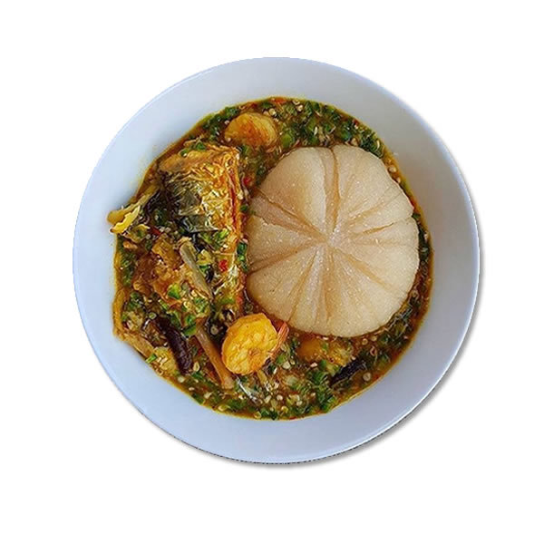

Banku and Okro Stew

Ingredients
- 1 cup fermented corn (without cassava dough)
- Salt
- Cassava grated tuber with cassava dough
- 1 cup fermented corn dough
Instructions
- Add water in a mixture of fermented corn and grated cassava in a large pot until it thickens.
- Under medium heat, put pot on the fire and stir the mixture continuously to avoid it forming lumps
- When the mixture hardens, add a small amount of water and stir until its soft
- Cover banku for 10 mins and stir again
- Roll it into orange-sized balls and use rubber to wrap it tightly
Retrun to Top
Return to Homepage